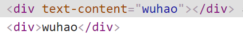

简写：
:
一、绑定特性
- :后的为传递的参数
<!-- 绑定一个属性 --> |
- 没有参数时，可以绑定到一个包含键值对的对象，该对象内部不能放class和style
<!-- 绑定一个有属性的对象 --> |
二、绑定class
对象语法：下面的语法表示 active 这个 class 存在与否将取决于数据属性 isActive 的 真假
数组语法：数组是一个 class 列表
在数组语法总可以使用三元表达式来切换class
在数组语法中可以使用对象语法
- v-bind:class 可以与普通 class 共存
<div v-bind:class="{ active: isActive }"></div> |
三、绑定style
- 使用对象语法
- CSS属性名可以用驼峰式或者短横线分隔来命名，但是使用短横线分隔时，要用引号括起来
<div v-bind:style="{ fontSize: size + 'px' }"></div> |
- 也可以直接绑定一个样式对象，这样模板会更清晰
<div v-bind:style="styleObject"></div> |
- 使用数组语法：数组语法可以将多个样式对象应用到同一个元素
<div v-bind:style="[styleObjectA, styleObjectB]"></div> |
自动添加前缀：绑定style时，使用需要添加浏览器引擎前缀的CSS属性时,如 transform，Vue.js会自动侦测并添加相应的前缀
多重值：从 2.3.0 起你可以为 style 绑定中的属性提供一个包含多个值的数组，常用于提供多个带前缀的值:
<div v-bind:style="{ display: ['-webkit-box', '-ms-flexbox', 'flex'] }"></div> |
这样写只会渲染数组中最后一个被浏览器支持的值。
在本例中，如果浏览器支持不带浏览器前缀的 flexbox，那么就只会渲染 display: flex。
四、修饰符
.camel：由于浏览器会将大写字母转换为小写字母
所以，Vue提供了v-bind修饰符 camel，该修饰符允许在使用 DOM 模板时将 v-bind 属性名称驼峰化
<!-- 最终渲染的结果为：<svg viewbox="0 0 100 100"></svg> --> |
- .prop：被用于绑定 DOM 属性
属性是js给出的值，如class、id,特性是我们自定义的
<!-- 此时text-content被认为是一个特性 --> |

- .sync：看组件时再说